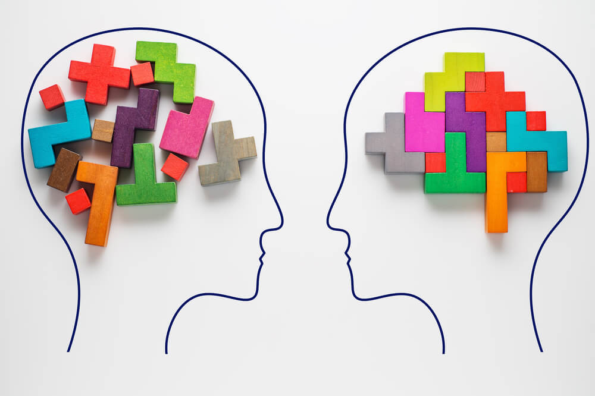

La psicología es una disciplina que tiene como objetivo analizar los
procesos mentales y del comportamiento de los seres humanos y sus interacciones con el ambiente físico y
social.
La palabra "psicología" proviene del griego psico o psykhé, que
significa 'alma', 'psique' o 'actividad mental', y de logía, que significa 'estudio' o 'tratado'. Por lo
tanto, psicología significa estudio o tratado de la psique.
Dentro de la psicología son posibles y justificables al menos dos
enfoques: el de las ciencias naturales, que busca una explicación causal, y el de las ciencias filosóficas,
que busca una explicación de significado y de sentido.
Gran parte de las investigaciones en psicología se llevan a cabo a
través del método de la observación sistemática. En algunos casos, la observación puede ser ocasional.

Origen y desarrollo de la psicología
Filósofos de la antigüedad como Sócrates, Platón y Aristóteles fueron precursores de la psicología, en tanto
que reflexionaban sobre el alma humana y su modo de relacionarse con el mundo.
Otro tanto hicieron autores posteriores como Santo Tomás de Aquino en la Edad Media, Descartes en el
renacimiento, Christian Wolf e Immanuel Kant, por solo nombrar algunos.
La psicología con orientación naturalista tuvo su apogeo en el siglo XIX. Se asoció con la fisiología
sensorial de J. Müller y H. Helmholtz, y la invención de los métodos psicofísicos de medida de EH Weber y G.
Th. Fechner.
En 1879 surgió la psicología experimental en Alemania con Wundt, quien fundó el primer laboratorio de
psicología experimental. Fue a partir de allí que se produjo la separación entre la filosofía y la
psicología.
Pronto la psicología se expandió mediante la investigación del pensamiento, de la voluntad, de los reflejos
condicionados (Pavlov), de la introducción del análisis factorial (Ch. Spearman) y, por último, de la medida
de la inteligencia (A. Binet).
¿Qué es realmente un psicólogo?
Un/una psicólogo/a es un profesional cualificado que ha recibido una
formación universitaria formal en Psicología (Licenciado en Psicología). La Psicología es la ciencia que
estudia la conducta humana, entendiendo dentro de este concepto cuestiones relacionadas con el aprendizaje,
procesos de pensamiento, emociones, comportamientos, tanto en su desarrollo normal como en los diferentes
trastornos o problemas del pensamiento, de las emociones y del comportamiento. Esto es, la Psicología
Científica dispone de modelos explicativos de la conducta normal y de los trastornos y de técnicas adecuadas
para la evaluación, criterios para diagnóstico y establecimiento de las conductas problema y objetivos de
tratamiento, así como de técnicas eficaces para la intervención en las diferentes problemáticas.
El psicólogo cognitivo-conductual es, además, un educador y un
entrenador de habilidades de afrontamiento, con las que se pretende, no sólo solucionar los trastornos y
problemas actuales, sino entrenar a la persona para la prevención de recaídas, de modo que el aprendizaje se
mantiene a lo largo del tiempo.
El psicólogo escucha atento al cliente y trabaja con él, sesión a
sesión. Sin embargo, el psicólogo no es un mero “confesor”; el tratamiento implica una actitud activa por
parte del cliente, realizando entre sesiones las tareas para casa que el psicólogo le va proponiendo. De
esto depende, en gran medida, la evolución favorable del tratamiento.